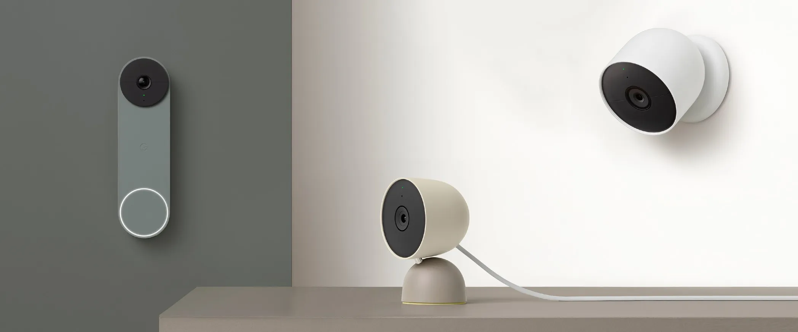

Security Cameras in New Mexico
Doorbell cameras, outdoor cameras, and practical placement planning for real coverage.
Call or Text: 505-331-7834
Email: joe@swsa.ai
If you are looking for security camera installation in New Mexico, I install and configure camera coverage designed around real entry points and usable sightlines. Most homeowners want a simple outcome: clear video at the places that matter, alerts that are not constant noise, and a setup that is easy to manage.
I commonly work with customers in Albuquerque, Santa Fe, Farmington, and Durango. Camera coverage should match the layout of your home, not a generic equipment list.
Google Nest Cameras (High-Value Features)
If you use the Google ecosystem, Google Nest cameras and doorbells are a strong option because they prioritize meaningful alerts rather than basic motion triggers.
- Smart object detection – identifies people, vehicles, animals, and packages (supported models).
- Activity zones – limit alerts to specific areas like a driveway or porch.
- Event-based history – filter recordings by people, vehicles, or packages.
- Google Home integration – view cameras on Nest displays and manage alerts in one app.
Note: Some advanced features require a Nest Aware subscription.
What Most Homes Actually Need
Most homes do not need cameras everywhere. High-value coverage usually starts with:
- Front entry coverage (doorbell or front-facing camera)
- Driveway visibility
- Garage access
- Backyard and gate access
- Low-light performance for nighttime usability
Doorbell Cameras
Doorbell cameras are often the first step because they create visible deterrence and front-door awareness.
- Visitor alerts
- Package visibility
- Two-way audio communication
- Correct angle and height placement
Outdoor Cameras
Outdoor cameras provide broader perimeter awareness. Placement matters more than quantity.
- Driveways and approach paths
- Side yards and gates
- Back doors and sliding doors
- Detached garages and outbuildings
Indoor Cameras (When Appropriate)
Indoor cameras can provide confirmation in common areas or entry hallways when appropriate for the household.
- Common areas
- Entry hallways
- Selective placement based on comfort level
Camera Placement Planning
Placement determines performance. A good plan reduces false alerts and improves usable footage.
- Proper sightlines for face capture
- Height and angle optimization
- Lighting and night performance considerations
- Alert configuration to reduce notification fatigue
FAQ – Security Cameras in New Mexico
How many cameras do I need?
Most homes begin with 1–3 cameras covering front entry and primary approach paths. Additional coverage depends on blind spots and layout.
Doorbell or outdoor camera first?
Many start with a doorbell camera. If driveway or yard coverage is more important, an outdoor camera may come first.
Do you help plan placement?
Yes. Placement planning is one of the most important parts of a camera system.
How do I request a quote?
Call or text 505-331-7834 and tell me your city (Albuquerque, Santa Fe, Farmington, Durango, or nearby) and what you want covered.
Contact

Joseph Gilbert
Southwest Security & Automation LLC
Serving New Mexico and the Four Corners
Call or Text: 505-331-7834
Email: joe@swsa.ai